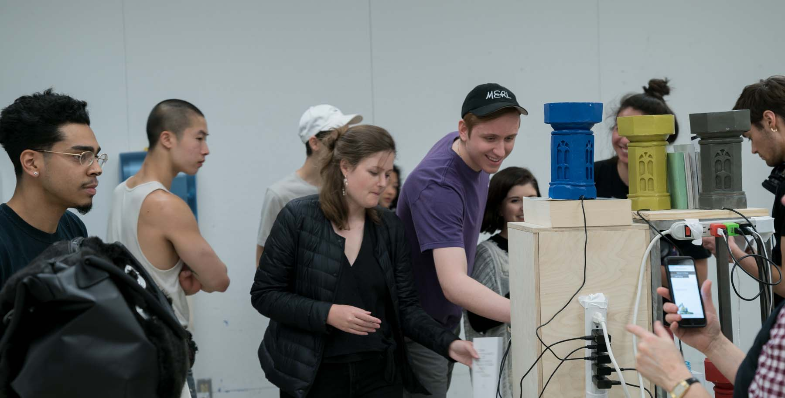
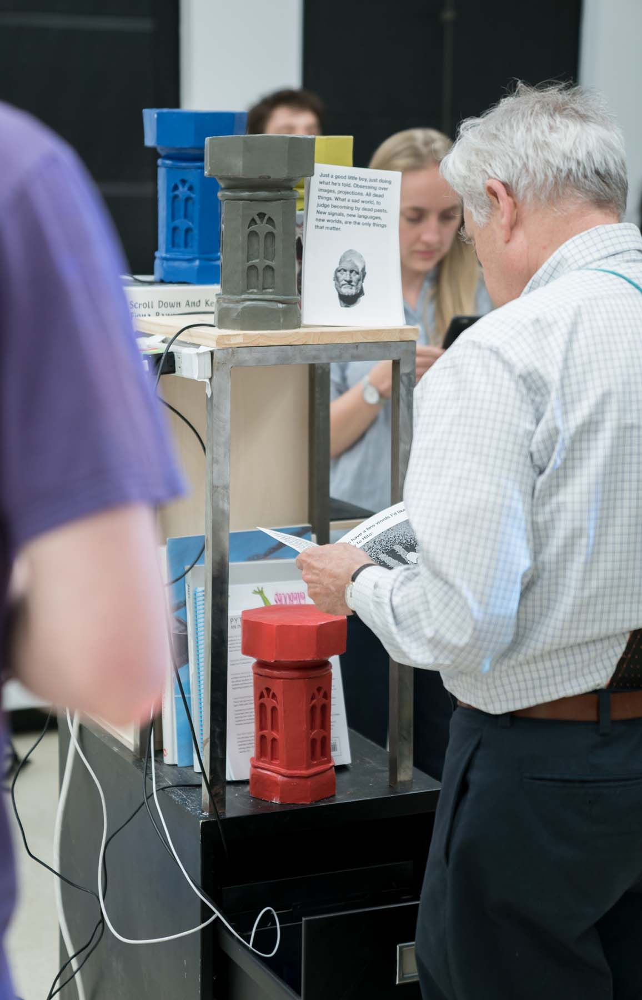
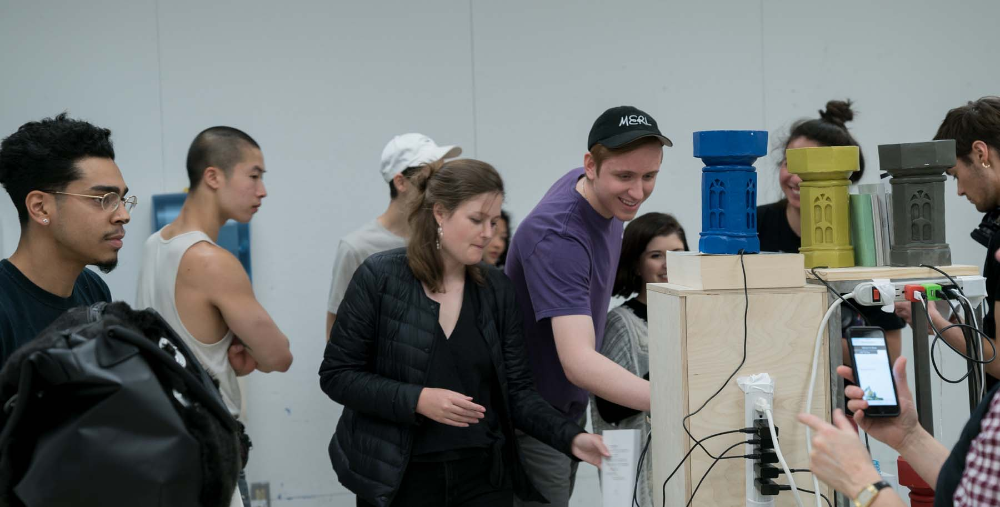
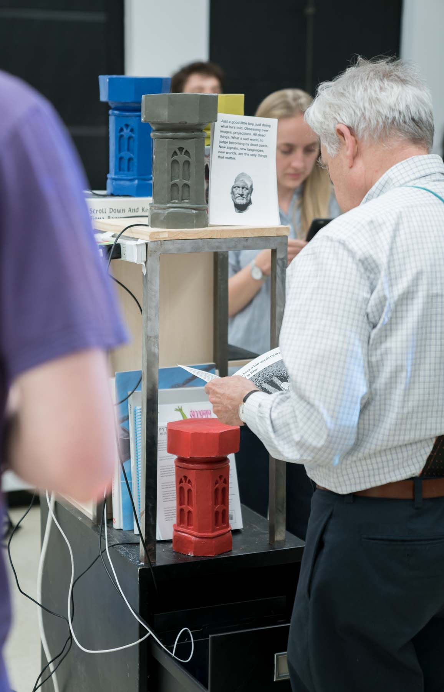
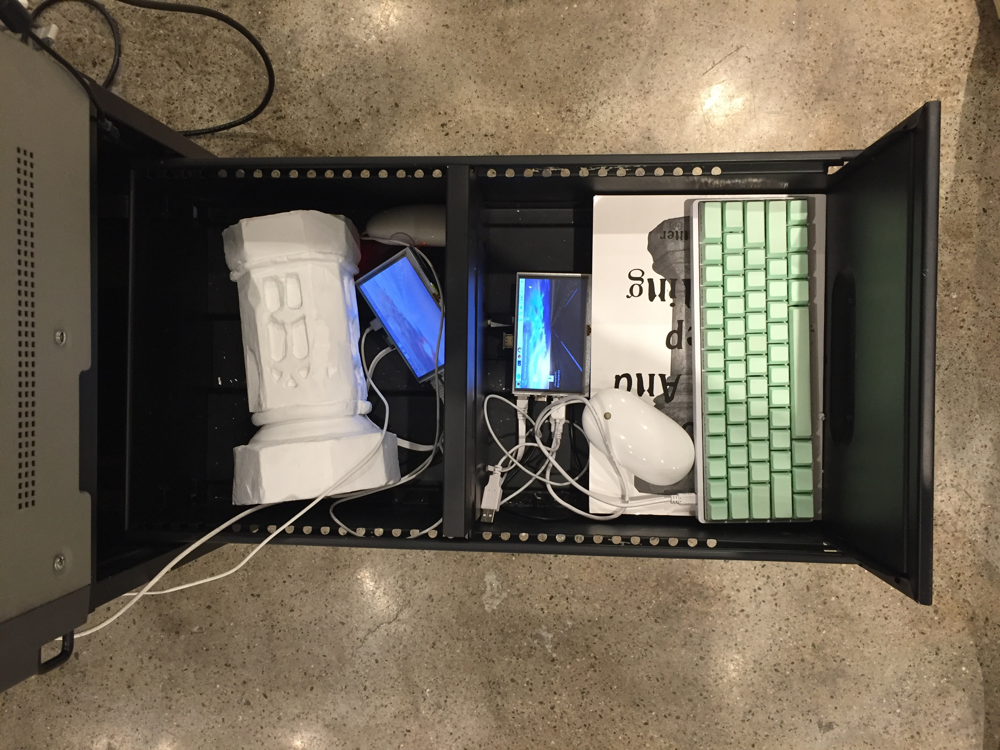
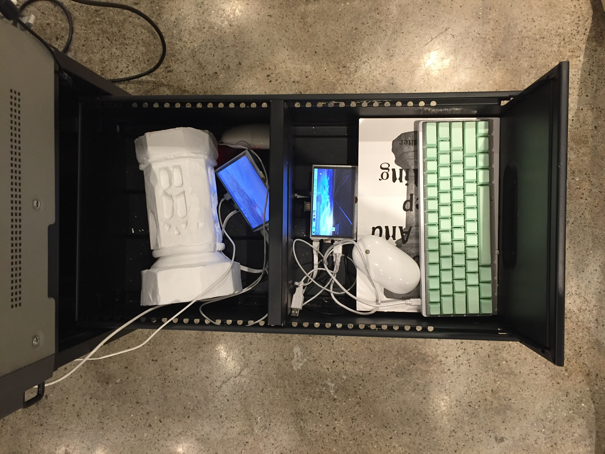

Artifacts Of Compression
Artifacts of Compression was my final project at RISD. It centered around a simple idea of mine, creating a number of independent and self sustained internets. My goal was to create a collection of objects where each object would tell a story through a wifi network it produced. Together they would form a mesh network spanning the campus of RISD and Brown. The story they would tell would be the story I had been trying to tell in countless ways for almost two years, the story of the death of my lifelong best friend and a person who had an enormous influence over who I am today. The trailer made for this project is by Tristan Hsu.
Finding A Form
The form of my micro internets was inspired by the cover of a book I owned "Scroll Down And Keep Scrolling" by Fiona Banner. Initially I was drawn to the architectural nature of the form on the cover. When I dug into its historical nature as an object I discovered that it was a specific type of column called a font. Fonts were used in baptism and other ceremonies. As a graphic designer I immediately knew that I had to design a font of my own.
Designing A Font
It was decieded; this form would house my internets. To me they represented a kind of rebirth, and also the beginning of some kind of cathedral to house the content I wished to store. I wanted these micro internets to feel spacial. I wanted them to have high vaulted ceilings in some places and become small and cramped in other places. The Font spoke to that perfectly as a form. I initially thought I would model it in 3D and then print it on a 3D printed but I was struck with an urge to ditch the needless tech and simply mold it out of clay. From there I made a two part mold with a ton of help from my friend Sam Lavoie. I filled the mold with plaster and painted each one. In the end I designed 6 Fonts.


WiFi Tower Of Babel
Once I had created these 6 fonts I was stuck. Alone they felt insignifcant and too opaque for a user to really dig into them. After weeks of treading water I was struck with a strong urge to build. It was a similar urge that lead me to designing the fonts out of clay. I went with it. I started creating plywood fixtures and gathering supplies from all around my studio to stack together. I was making a sort of WiFi Tower of Babel. As it built up it became a seires of vinietes related to the life and death of my good friend. It became a monument and a library.
For my final presentation at RISD I read aloud a manifesto I had written for myself a week or so after my friends death. My friend and I collaborated constantly and at some point after his death I realized I has used his technological know how as a crutch. I wrote this manifesto to remind myself always push myself to be better. It is as follows:
I will be both.
I will accept the problems I encounter as only my own.
I will build my own computers, I will roll my own libraries.
I will copy and paste, but I will seek to understand.
I will use the internet.
I will read past the headline.
I will read past the first comment.
I will seek to refine my craft both technically and creatively.
I will tackle the problems that are scary to me.
I will utilize both of our campuses tools to the extent I need them and that I am able to.
I will attempt to understand more than I need to understand for any specific endeavor.
I will hack, break, and take nothing as it is without appropriate investigation.
I will collaborate.
I will work on my own.
I will question my own authorship.
I will not rest on my technological laurels.
I will not be satisfied with spectacular acts or speculative acts.
I will actively seek to embody both of our ideals, bridging the gaps we had in skill sets.
I will dig deeper into the obstacles I face; I will not pawn them off to anyone anymore.
After reading this I invited my friends and collegues to experiment and play with the tools, books, and memories I had collected.


 



 
